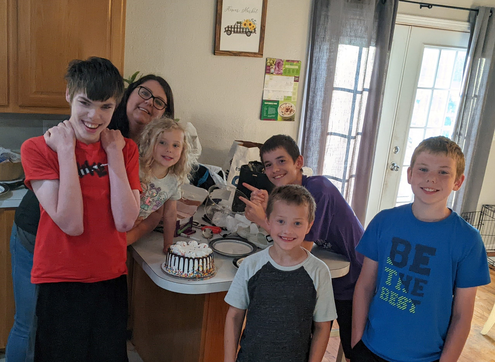

Hobbies
Custom Keyboards
I have way too many hobbies to pick just one. I have done a little bit of everything, but I really enjoy making keyboards. I'm currently working on a split board thats running two Arduino nanos. I just need to finish the code for the split matrix layout. Which is something I have never done, so it's taking a little longer than I expected.

Family
Family time is one of my favorite hobbies. My girlfriend and I have 5 kids, 3 biological and 2 recently adopted. So far only my daughter likes computers. She "Works" on mine any time I'm not in my chair. They keep me very busy, but I wouldn't trade it for the world.
